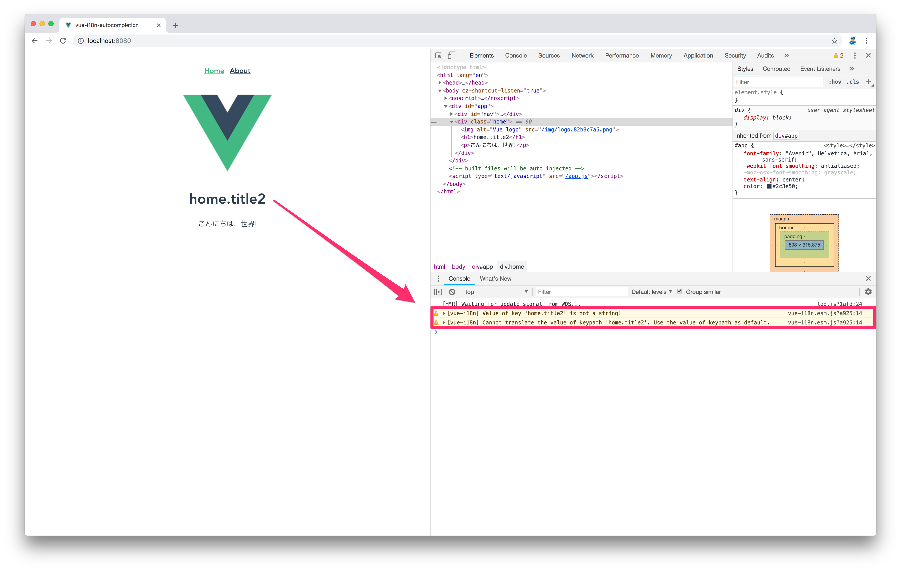
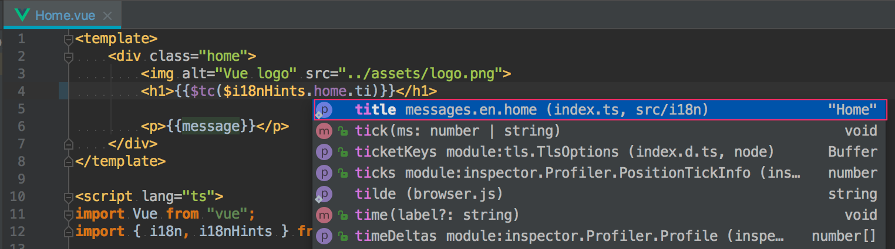
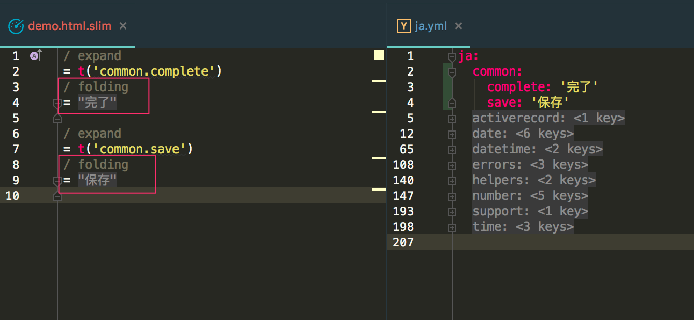

vue-i18n の簡易入力補完を実装してみた雑感
vue-i18n の入力補完を実装してみた．久々に業務で i18n 対応をするようになって，若干ツラさを感じているところもあるので，併せて記す．
はじめに断っておくが，ツラさを感じているのは vue-i18n に対してではなく，i18n 全般に対してのこと．
文字列指定を入力補完したい
エディタでvue-i18nの入力補完したい
— tanakaworld 🧢 (@_tanakaworld) August 30, 2018
vue-i18n に限らず i18n 系を扱うときは $tc('home.title') のような感じで文字列をキーとして指定することになる．
- 文字列キーのタイポしなくしたい
- 文字列キーのパス入力をカンタンにしたい
これらを入力補完でなんとかしたい．
普通に vue-i18n を使った場合
普通に実装するとこういう感じになる．
1 | import Vue from "vue"; |
1 | <template> |
翻訳のキーには文字列 home.title が使われる．このキーを typo したり，locale ファイルの構造が変わり，正常に翻訳できないことを気づくのは，大抵実行時になる．またmessages の数が多くなったり，複数ファイルにまたがったりすると記述するときに迷うのもツラい．

message オブジェクトから，入力補完用のオブジェクト i18nHints を生成
'home.title' という記述を i18nHints.home.title のようなオブジェクトで代替する．オブジェクトを自動生成する generatePathMap がやっていることは単純で messages オブジェクトのキーを文字列として別のオブジェクトにマッピングしているだけ．
1 | const locale = "ja"; |
TypeScript 使っている場合は，別途型定義が必要．
1 | import "vue"; |
<template></template> 内では $i18nHints が，<script></script> 内では i18nHints を使って，指定する文字列が参照できるようになる．
1 | <template> |
こんな感じで入力補完されるようになる．

その他 i18n でツラいところ
- ソースコード読みづらい
- locale ファイル構造どうするか
ソースコード読みづらい
日本人ならソースコード(特に View 周り)に日本語が入っていると，パッと目で見たときにどういう UI か認識しやすいだろう．しかしその日本語が全て英数字の代替テキストに変わっていると，想像以上に見づらい．というのを最近感じている．
Rails 開発でよく使っている RubyMine だと，i18n 文字列をデフォルトロケールの文字列で表示することができる(Code > Folding > Expand/Collapse)．普段フロントエンド開発は WebStorm 使っているがそっちでも同じ機能が欲しい．RubyMine に慣れているだけなのかもしれないが，これ結構ツライ．．．

locale ファイル構造どうするか
i18n 対象が多くなってくると，どういう階層構造で管理するかが課題になってくる．共通なものは common，エンティティ系は models，UI パーツは modules とか，使っているデザインパターンにもよるだろう．どこにでも所属しうるテキストが出てきたときに配置に迷うことがよくある．実装するときに迷うのだから，誰かが定義した i18n 文字列を探すときも同様に迷う．この辺りはベスト・プラクティスなるものが発見できておらず，多少冗長になってもページごとに完全に分離してしまうとか，迷わない構造が求められる．
なぜ i18n 対応するのか
- 多言語化・翻訳対応
- 文字列の共通化
つくっているアプリケーションが単独言語しかサポートしないのであれば，後者が主たる目的になるだろう．その目的だけで i18n 対応するのは，前述したツラさを踏まえると，対応しないという選択肢もあってよいと思う．要件や仕様が固まっていない場合は，一旦対応せずに開発を進めて，落ち着いたらまとめて i18n 対応するのもいいかも．locale ファイルのリファクタリングするのは結構重い．
まとめ
サンプルコードはこちら
この入力補完は，JavaScript のオブジェクトを使うことによってエディタがよしなに補完してくれるようになっただけ．無理やり感あるので，よりよいやり方を模索したいと思う．Vue.js の template 内で TS の型チェックが効くようになったら，型でも縛りたい．
それと以前 @kazu_pon さんにアドバイスもらった vetur 使うやつ今度試してみる．
参考になります！vscode だったら、veturのlanguage server protocol に便乗したやつ作れば、行けそうな気が。
— 🐤kazupon@Vue.js入門発売中ゥゥッ！🐤 (@kazu_pon) August 30, 2018
追記 2018/08/01
ここで紹介されてる vue-i18n-service を用いた locale の管理方法がとてもよさそう．SFC 毎に locale ファイルを管理するアプローチ．
localeファイル構造の管理のツラさは、どのi18nライブラリもある共通のツラさかなと思っている。Vue CLI のツールかこんな感じの単独のツールを提供したいと思っている。https://t.co/txpUw0W0Cg https://t.co/VFRYXFReYU
— 🐤kazupon@Vue.js入門発売中ゥゥッ！🐤 (@kazu_pon) September 22, 2018